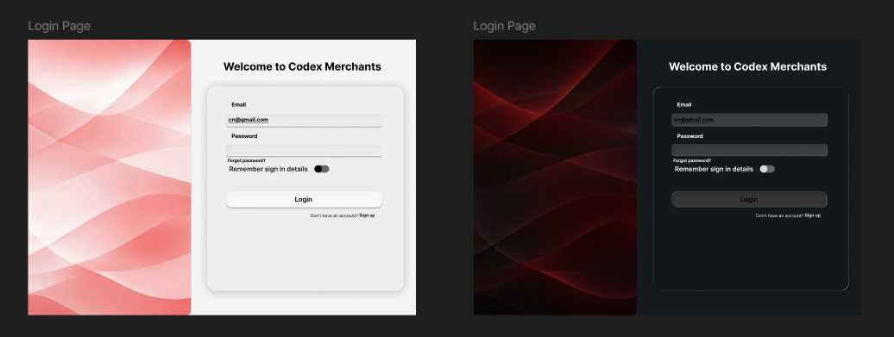
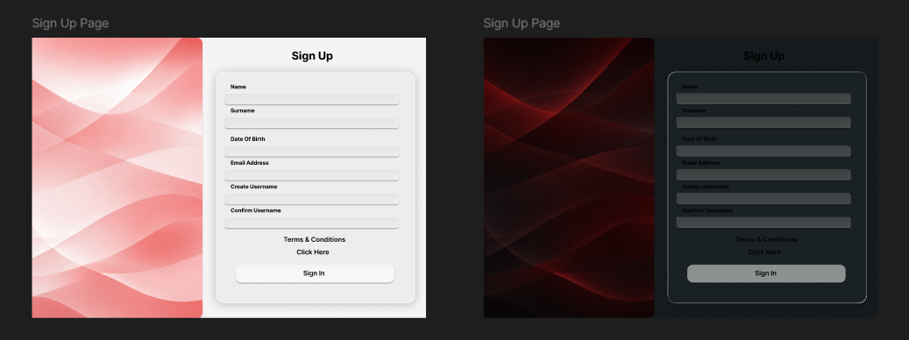
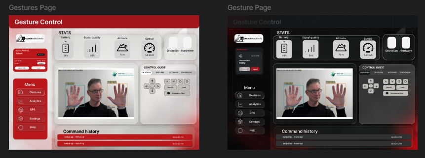
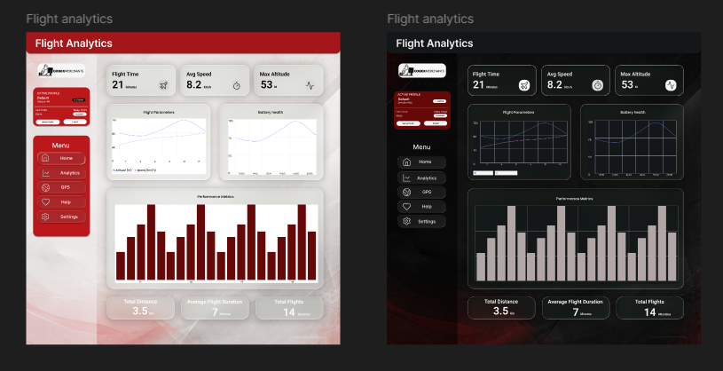
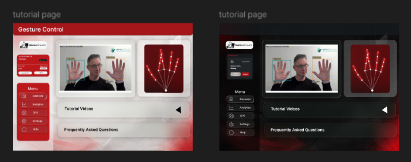

Brand & Design System¶
What this document covers
The Brand & Design System for the Gesture-Based Drone Control System (GBDCS). By Demo 2 the system has progressed from wireframes to a working implementation, and the visual language has matured accordingly. This document is both a brand guide (palette, logo, voice) and a design system (tokens, components, layout, accessibility). It is served as a first-class page on the project documentation site and is the canonical source for visual decisions across the implementation.
Demo-2 alignment
Several deliverable expectations from the Demo 2 brief land on this document. Items still in flight at the time of writing are tagged. They include the standalone deployed style-guide page alongside the production app, the additional logo variants beyond the primary mark, and the self-hosting of the font payload.
1. Brand Story¶
GBDCS sits at the intersection of accessibility and aviation: it lets anyone fly a drone with the wave of a hand. The brand has to land in that intersection — disciplined enough to be trusted around real flight hardware, approachable enough to feel like the first thing a new operator wants to try.
| Brand pillar | Translation into design |
|---|---|
| Accessible by default | High-contrast palette anchored on red against off-black; sans-serif typography at generous body sizes; WCAG 2.2 AA on every surface. |
| Real-time and alive | Motion is used to confirm system liveness — pulses on the gesture indicator, fade-in on telemetry frames — never as decoration. |
| Confident, not flashy | Single dominant colour (red), minimal gradients, no drop shadows on the logo, no extraneous chrome. |
| Operator-first | Information density tuned for a pilot who is also gesturing — large hit targets, peripheral-vision-friendly alert colours, no modals interrupting flight. |
2. Colour Palette¶
The palette is anchored on a red core (the action colour), an off-black surface in dark mode, off-white surface in light mode and a translucent "glass" layer used across cards, panels and navigation.. Accent semantic colours are added only for success, warning, info and error states.
2.1 Core palette¶
| Role | Token | Dark (default) | Light (data-theme="light") |
Usage |
|---|---|---|---|---|
| Background | --bg |
#0B090A |
#F5F3F4 |
Page background. |
| Surface | --surface |
#161A1D |
#FFFFFF |
Raised, non-glass surfaces. |
| Ink (text) | --ink |
#F5F3F4 |
#0B090A |
Primary text. |
| Muted | --dim |
#B1A7A6 |
rgba(11,9,10,0.55) |
Captions, placeholders, secondary text. |
| Hairline | --line |
rgba(211,211,211,0.14) |
rgba(11,9,10,0.14) |
Dividers, FAQ list rules. |
| Primary | --red |
#E5383B |
#BA181B |
Primary buttons, links, active states, brand accent. |
| Primary (deep) | --red-deep |
#BA181B |
#A4161A |
Gradient partner for --red on primary buttons/CTAs. |
| Primary (shadow) | --red-shadow |
#660708 |
#E5383B |
Third stop in red-family gradients and pressed shadows. |
| Glow | --glow |
rgba(229,56,59,0.8) |
rgba(186,24,27,0.45) |
Ambient glow on status dots and CTA shadows. |
2.2 Glass tokens¶
| Token | Dark (default) | Light | Usage |
|---|---|---|---|
--panel |
rgba(22,26,29,0.55) |
rgba(255,255,255,0.6) |
Solid-ish fallback panel colour. |
--nav |
rgba(11,9,10,0.72) |
rgba(245,243,244,0.78) |
Nav / sidebar backing layer. |
--glass |
rgba(255,255,255,0.06) |
rgba(255,255,255,0.55) |
Glass gradient stop 1. |
--glass-2 |
rgba(255,255,255,0.015) |
rgba(255,255,255,0.22) |
Glass gradient stop 2. |
--glass-brd |
rgba(255,255,255,0.13) |
rgba(11,9,10,0.1) |
Glass border colour. |
--glass-hi |
rgba(255,255,255,0.1) |
rgba(255,255,255,0.9) |
Inset top highlight on glass surfaces. |
--glass-shadow |
0 12px 40px rgba(0,0,0,0.45) |
0 10px 30px rgba(11,9,10,0.1) |
Drop shadow under glass surfaces. |
How colours are referenced in code: Colours live as CSS custom properties on
.md-root, overridden under.md-root[data-theme="light"]. Dark is the default theme and light mode is opted into by settingdata-theme="light"on the root element. there are no build-time Tailwind config for this layer, values are runtime CSS variables.
2.2 Semantic palette¶
| Role | Token | HEX | Usage |
|---|---|---|---|
| Success | #1B7F3A |
Confirmation toasts, telemetry "OK" pill, take-off complete. | |
| Warning | #C77700 |
Battery 15–25 %, link flapping, soft failsafe. | |
| Error | #A4161A |
Critical alerts, validation errors, emergency-stop activation. (Re-uses primary red on purpose — failure is a system-level state.) | |
| Info | #1F6FB3 |
Tutorial overlays, help menu highlights. |
2.3 WCAG 2.2 contrast ratios¶
All foreground / background pairings used in the production UI are designed to meet WCAG 2.2 AA at a minimum, with AAA achieved for body text on both themes. The values below are the design-time ratios; an automated audit (§8.6) verifies them per build.
| Foreground | Background | Ratio | Level | Use |
|---|---|---|---|---|
--ink #F5F3F4 |
--bg #0B090A |
~18.0 : 1 | AAA | Body text, dark mode. |
--ink #0B090A |
--bg #F5F3F4 |
~18.0 : 1 | AAA | Body text, light mode. |
--red #E5383B |
--bg #0B090A |
~4.7 : 1 | AA | Links, active states, dark mode. |
--red #BA181B |
--bg #F5F3F4 |
~5.9 : 1 | AA | Links, active states, light mode. |
--dim #B1A7A6 |
--bg #0B090A |
~8.5 : 1 | AAA | Captions, placeholders, dark mode. |
--dim (blended) |
--bg #F5F3F4 |
~4.3 : 1 | AA — large text / UI only | Captions, placeholders, light mode. |
#FFFFFF label |
--red-deep #BA181B (dark) |
~6.5 : 1 | AAA | Primary button labels, dark mode. |
#FFFFFF label |
--red-deep #A4161A (light) |
~7.8 : 1 | AAA | Primary button labels, light mode. |
Open item:
--dimon the light mode background sits just under the AA threshold for normal body text (~4.3:1 against the 4.5:1 bar). Its fine for large text, captions set at 14px+/500 weight, and UI chrome (3:1 bar), but should not be used for small long-form body copy in light mode until bumped - same category of issue as the muted-grey flag in the previous palette.
2.4 Usage rules¶
- Red is the action colour. Reserve it for primary buttons, links, and active states. Don't use it for decoration.
--bgis the base surface; glass sits above it. Never place glass-on-glass without a visible gap.- Muted (
--dim) carries hierarchy. Captions, placeholders, and disabled states use it; avoid using it for primary body text in light mode. - Semantic colours are reserved for state. A green pill always means "OK"; an amber pill always means "warning". Never use them for emphasis.
- The spotlight glow is a hover-only affordance, not a static decodation. It should only render while the cursor is over the element.
3. Typography¶
The system uses a two-family stack for UI, a dedicated display for headings, and a monospace for numbers, telemetry readouts, and code blocks.
3.1 Families¶
| Role | Family | Fallback stack | Source | Licence |
|---|---|---|---|---|
Display / headings (h1–h3) |
Chakra Petch (weights 400–700) | "Space Grotesk", sans-serif |
Google Fonts (self-hosting planned) | SIL Open Font Licence 1.1 |
| UI / body | Space Grotesk (weights 400–600) | system-ui, sans-serif |
Google Fonts (self-hosting planned) | SIL OFL 1.1 |
| Monospace | JetBrains Mono (weights 400–500) | ui-monospace, Consolas, monospace |
Google Fonts (self-hosting planned) | Apache 2.0 |
Self-hosting (rather than the Google Fonts CDN) is planned
and aligns with the SRS R8.2 posture — no runtime
telemetry to external services. Until that lands, the fonts are
loaded via @import at build time.
3.2 Typographic scale¶
A modular scale at ratio 1.2 anchored on 16 px body.
| Token | Size | Line height | Weight | Letter spacing | Use |
|---|---|---|---|---|---|
h1/h2 (section) |
clamp(1.9rem, 4.4vw, 3.4rem) |
1.05 | 600 | normal | Page titles, section headings. |
h3 |
20 px / 1.25 rem | 1.05 | 600 | normal | Card titles. |
| Eyebrow | 11 px | 1.2 | 500 | 0.28em | Kicker label above a headline, mono, red. |
Body (p) |
15 px / 0.95 rem | 1.6 | 400 | normal | Default paragraph text. |
| small | 14 px / 0.85 rem | – | 400 | normal | Secondary / helper paragraph text. |
| Code / mono | 12–14 px | – | 400–500 | normal | Telemetry numbers, command tags, code. |
All
h1–h3elements share the Chakra Petch family and a tight 1.05 line-height as set inindex.css. Meaning headings can run large, so the tighter leading keeps multi-line headings from feeling loose.
3.3 Weights used¶
400 (regular), 500 (medium), 600 (semibold), 700 (bold). The team does not ship 300, 800, or 900 — they would tempt overuse of decorative weights and increase the font payload.
4. Logo & Iconography¶
4.1 Logo¶
The Codex Merchants logo currently ships in one form.
| Form | File | Use | Status |
|---|---|---|---|
| Full (colour) | assets/codex_merchants_logo.png |
Default. README, docs site header, landing-page hero. | Available |
| Monogram | assets/codex_merchants_mark.png |
Tight spaces — favicon, browser tab, app icon, ≤ 32 px usage. | Available |
| Monochrome | assets/codex_merchants_mono.png |
Print, single-colour contexts. | Available |
| Inverse | assets/codex_merchants_inverse.png |
On red brand surfaces only. | Available |
4.1.1 Minimum size & clear space¶
- Full logo: minimum 120 px wide on screen.
- Monogram (once published): minimum 24 px wide.
- Clear space around the logo: at least the height of the monogram on all four sides. Other elements may not enter this zone.
4.1.2 Forbidden treatments¶
- Stretching or skewing the logo to fit a frame.
- Recolouring outside of the four documented forms.
- Applying drop shadows, glows, or strokes.
- Placing the logo on a busy photograph without a solid backing.
- Rotating the logo at any angle other than 0°.
4.2 Iconography¶
The system uses Lucide as the single icon library (MIT-licensed).
| Property | Rule |
|---|---|
| Default stroke width | 1.75 px (Lucide default is 2 px; we run lighter for visual harmony with Inter). |
| Default size | 20 × 20 px inline; 24 × 24 px standalone in buttons; 32 × 32 px for empty-state illustrations. |
| Colour | currentColor — icons inherit the surrounding text colour. |
| Accessibility | Standalone icon buttons must carry an aria-label. Decorative icons must have aria-hidden="true". |
Custom illustrations (e.g. the hand-gesture vocabulary card) are
drawn in the same 1.75 px stroke, --ink on --bg, to sit
naturally next to Lucide icons and glass surfaces.
5. Design Tokens¶
Tokens are the single source of truth for visual properties. The implementation lives in tailwind.config.js — this document reflects those values exactly. Drift between the guide and the code is treated as a bug.
5.1 Colour tokens¶
See §2 for values and dark/light pairs.
5.2 Spacing scale¶
| Token | Value | Use |
|---|---|---|
xs |
0.5 rem (8 px) | Tight grouping; icon to label. |
sm |
1 rem (16 px) | Form-field internal padding, list-item gap. |
md |
1.5 rem (24 px) | Card padding, section gap. |
lg |
2 rem (32 px) | Major section divider. |
xl |
3 rem (48 px) | Landing-page section padding, hero padding. |
5.3 Radius¶
| Token | Value | Use |
|---|---|---|
sm |
8 px | .md-cmd, .md-dlext, .md-modechip, .md-sbtheme. |
md |
12 px | .md-sbtab (left corners only). |
lg |
14 px | .md-telemetry. |
xl |
16 px | .md-panel, .md-card, .md-node, .md-mode, .md-dlcard, .md-screen. |
2xl |
20 px | .md-sidebar (left corners only). |
pill |
999 px | .md-chips li. |
Radius values are component-specific under the glass system rather than a flat numeric scale. see §6 for which toke applies where.
5.4 Shadow & glass¶
| Token | Value | Use |
|---|---|---|
--glass-shadow (dark) |
0 12px 40px rgba(0,0,0,0.45) |
Drop shadow under every glass surface. |
--glass-shadow (light) |
0 10px 30px rgba(11,9,10,0.1) |
Same, light mode. |
| Inset highlight | inset 0 1px 0 var(--glass-hi) |
Paired with the drop shadow on all glass surfaces — reads as a frosted top edge. |
| Hover glow | 0 0 24px rgba(229,56,59,0.16) |
Added to the shadow stack on .md-card/.md-node/.md-mode/.md-dlcard/.md-screen hover, alongside a border colour shift to --red. |
| Backdrop blur | 10px–26px + saturate(140–150%) |
Scales with surface size — see §6 component table. |
5.5 Motion¶
Motion is functional, not decorative.
| Name | Behaviour | Duration | Use |
|---|---|---|---|
.md-ltr (md-rise keyframes) |
Rises 0.55em, blur(8px) → 0, fades in | 0.8 s, cubic-bezier(0.2,0.75,0.25,1) |
Hero eyebrow / headline entrance on load. |
.md-reveal / .md-reveal.md-in |
Translate 28px → 0 + fade, staggerable via --rd |
0.8 s | Scroll-triggered section reveals. |
md-pulse (keyframes) |
Opacity 0.35 ↔ 1 | 2 s (paired usage) | Live-status pulsing, gesture indicator heartbeat. |
.md-magnet |
Transform shift toward cursor (values set via JS) | 0.22 s, cubic-bezier ease-out | "Magnetic" hover on buttons/icons. |
animate-spin |
Loading spinner | 1 s linear | Loading state on primary buttons. |
All motion respects prefers-reduced-motion: reduce — animations and transitions are
disabled outright (not just shortened), and .md-reveal/.md-ltr snap directly to
their resting, visible, untransformed state.
All motion respects prefers-reduced-motion: reduce — animations
collapse to a 0 ms duration when the user has requested reduced
motion. The gesture pulse on the dashboard fades to a static badge
in this mode.
@media (prefers-reduced-motion: reduce) {
.md-root *, .md-root *::before, .md-root *::after {
animation: none !important;
transition: none !important;
}
.md-reveal, .md-ltr {
opacity: 1 !important;
transform: none !important;
filter: none !important;
}
}
5.6 Breakpoints¶
Tailwind defaults are in use (no custom breakpoints defined in tailwind.config.js).
| Token | Value | Target |
|---|---|---|
sm: |
640 px | Mobile landscape, small tablets. |
md: |
768 px | Tablets. |
lg: |
1024 px | Laptops; the dashboard's primary target. |
xl: |
1280 px | Desktop. |
2xl: |
1536 px | Operator workstation, large monitors. |
5.7 Backdrop blur¶
| Token | Value | Use |
|---|---|---|
xs |
10 px + saturate(140%) | Small controls — .md-toggle, .md-btn.md-ghost, .md-sbtheme, .md-chips li, .md-cmd, .md-dlext, .md-modechip. |
sm |
14 px + saturate(150%) | .md-sbtab. |
md |
18 px + saturate(150%) | .md-panel, .md-card, .md-node, .md-mode, .md-dlcard, .md-screen, .md-faqlist, .md-telemetry. |
lg |
20 px + saturate(150%) | .md-nav. |
xl |
26 px + saturate(150%) | .md-sidebar. |
6. Component Library¶
Visual specifications for every component used in the production system.
6.1 Button¶
| Variant | Background | Text | Use |
|---|---|---|---|
Primary (.md-btn.md-primary) |
linear-gradient(145deg, var(--red), var(--red-deep)) |
#fff |
The main action on a screen. Exactly one per view. |
Ghost (.md-btn.md-ghost) |
Glass gradient (--glass/--glass-2), 10 px blur |
var(--ink) |
Secondary / tertiary action next to a primary. |
| Danger | Same as Primary | #fff |
Destructive action (emergency stop, delete session). Distinguish via icon and label, not colour, since it re-uses the primary red. |
Sizes. sm (32 px height), md (40 px, default), lg (48 px, landing-page CTAs).
States.
- Default — as above.
- Hover (ghost/glass buttons) — border shifts to
--red. - Focus — solid
2px solid var(--red)outline,3pxoffset (see §8.2). - Active — primary gradient darkens toward
--red-shadow. - Disabled —
opacity: 0.5;cursor: not-allowed; no hover effect. - Loading — replace label with a 16 px spinner (
animate-spin); button width preserved; click events suppressed.
6.2 Input (text, email, password)¶
| Property | Value |
|---|---|
| Height | 40 px |
| Padding | 0.75 rem horizontal |
| Border | 1px solid var(--glass-brd) |
| Background | Glass gradient (--glass/--glass-2) |
| Focus ring | 2px solid var(--red), 3px offset (matches §8.2/§6.1) |
| Error border | --red; helper text below in --red |
6.3 Select / Dropdown¶
Same shape as the Input. Caret is a Lucide chevron-down at 16 px,
currentColor. Open state shows a panel with a standard glass shadow
and 16px radius.
6.4 Modal¶
| Property | Value |
|---|---|
| Width | up to 560 px |
| Backdrop | var(--bg) at reduced opacity + blur |
| Surface | Glass gradient at 18px blur, 16px radius |
| Shadow | var(--glass-shadow) + inset top highlight |
| Open duration | .md-reveal transition (respects prefers-reduced-motion) |
| Escape key | Closes the modal; focus returns to the trigger. |
6.5 Toast¶
| Variant | Surface | Border |
|---|---|---|
| Success | bg-green-600/12 |
border border-green-600 |
| Warning | bg-yellow-600/12 |
border border-yellow-600 |
| Error | bg-Red/12 |
border border-Red |
| Info | bg-blue-600/12 |
border border-blue-600 |
Toasts auto-dismiss after 5 s (warning) or 8 s (error). Critical
alerts (link loss, battery < 15 %) do not auto-dismiss — they
remain until acknowledged per R1.2.2.
6.6 Card (.md-card, .md-node, .md-mode, .md-dlcard, .md-screen)¶
16px radius, glass gradient at 18px blur, var(--glass-shadow) +
inset top highlight at rest. On hover: border shifts to --red and
the shadow gains a 24px red glow. .md-spot variants additionally
render a 260px radial spotlight that follows the cursor
(--sx/--sy set via mousemove), tinted rgba(229,56,59,0.14)
dark / rgba(186,24,27,0.1) light.
6.7 Gesture Indicator (domain-specific)¶
A 96 × 96 px circular badge in the top-right of the dashboard,
filled with --red when a gesture is locked. Pulses via
md-pulse when the gesture changes; static in
prefers-reduced-motion. The current gesture name and its mapped
command sit immediately below, in JetBrains Mono.
6.8 Telemetry Pill / Panel (.md-telemetry)¶
Glass surface, 14px radius, 12px 16px padding. Values render in
JetBrains Mono; label in --dim, value colour matches the semantic
state (--Success/--Warning/--red/--ink).
6.9 Chips, commands, mode toggles¶
| Class | Radius | Use |
|---|---|---|
.md-chips li |
999 px (pill) | Quick-action tags (e.g. "Take off", "Land"). |
.md-cmd |
8 px | Gesture → command mapping tags, mono type. |
.md-dlext |
8 px | File-extension badges on download cards. |
.md-modechip |
8 px | Flight-mode selector chips; active state border → --red. |
6.10 Navigation & Sidebar¶
.md-nav is a glass bar at 20px blur. .md-sidebar is a glass
panel at 26px blur with rounded left corners (20px) and a
left border; .md-sbtab is its collapsed-state tab, 12px
left-rounded, border colour shifting to --red on hover.
6.11 FAQ list (.md-faqlist)¶
Glass panel, top border in --line, 4px 24px padding; each
.faq-item gets its own bottom hairline except the last.
7. Layout & Spacing¶
7.1 Grid¶
Tailwind's built-in 12-column grid with a gap-md (1.5 rem / 24 px) gutter on screens >= md:and gap-sm ( 1rem / 16 px) below.
7.2 Responsive behaviour¶
| Surface | < md: (768 px) |
>= md: |
>= lg: (1024 px) |
|---|---|---|---|
| Landing page | single column, hero stacks vertically | two-column feature grid | three-column feature grid |
| Dashboard | video feed stacks above telemetry; gesture indicator floats top-right | side-by-side video and telemetry | full layout: feed + overlay + telemetry + replay timeline |
| Replay view | session list collapses behind a drawer | session list as left sidebar | session list + waveform + telemetry chart |
7.3 Spacing rules¶
- Inside a card: padding is
p-sm(1 rem); gap between elements isgap-xs(1.5 rem). - Between cards in a grid: gap is
gap-md(1.5 rem). - Page-level horizontal padding:
px-smon mobile,px-lgon tablet,px-xlon desktop. - Glass panels need slightly more breathing room than flat cards do
- the blur reads as "heavier", so keep at least
gap-mdbetween adjacent glass surfaces to avoid the borders visually merging.
8. Accessibility¶
GBDCS targets WCAG 2.2 AA as the minimum on every surface. AAA is achieved for body-text contrast on both themes (§2.4).
8.1 Keyboard navigation¶
- Every interactive element is reachable by
Tabin document order. - Modals trap focus;
Esccloses them and returns focus to the trigger. - The emergency-stop button has a global keybinding (
Ctrl+.) so it never depends on focus state.
8.2 Focus indicator¶
.md-root a:focus-visible, .md-root button:focus-visible receive a
solid 2px outline in --red, offset 3px;
chosen because a soft box-shadow ring can
be hard to see against a translucent glass background. The outline
is never suppressed without an equivalent visual replacement.
8.3 Screen readers¶
- Every
aria-labelis human-readable, not a token name. - The live gesture indicator carries
aria-live="polite"so a screen reader announces gesture changes without interrupting. - The critical-alert region carries
aria-live="assertive". - All form fields have associated
<label>elements; placeholders are not used as labels.
8.4 Motion¶
The system honours prefers-reduced-motion: reduce. All animations
defined in §5.5 collapse to 0 ms; the gesture pulse becomes a static
badge.
8.5 Colour¶
No information is conveyed by colour alone. Alerts also carry an
icon and a text label; telemetry pills carry a text value alongside
the colour. The --dim contrast caveat in §2.4 applies here too ->
don't rely on muted text alone to carry meaning in light mode.
9. Voice & Tone¶
GBDCS speaks to pilots. The voice is calm, direct, and specific.
| Surface | Tone | Example |
|---|---|---|
| Button labels | Imperative verb, ≤ 3 words. | "Take off", "End session", "Stop now". |
| Empty states | Friendly, action-oriented. | "No sessions yet — start a flight to see your history here." |
| Success messages | Quiet confirmation. | "Drone connected." (Avoid: "Successfully connected to drone!" — too loud for an operational surface.) |
| Errors | Cause first, then suggestion. | "Camera not detected. Connect a webcam or check your browser permissions." (cause + suggestion, per R11.3.) |
| Critical alerts | Telegraphic, urgent, never alarmist. | "Link lost. Hovering until link returns." |
Tone is never jokey in the operational paths. The Help menu and landing page may be warmer, but the dashboard itself stays professional — an operator in flight does not want a system that's trying to be funny.
11. Wireframes¶
The two operator-facing surfaces. Both realise the requirements cited in their captions.

Figure 11.1 - Operator Authentication (UC-4, R16.1.3).Left panel with brand imagery; right form with email, password, remember me toggle and a sign up link.

Figure 11.2 - New user registration (R16.1.1, R16.1.2).Mirrors login layout with additional fields: first name, last name , date of birth, password,password confirmation , terms acceptance.

Figure 11.3 - Live gesture control and telemetry (UC-1,R1.1.1-R1.1.3).Left sidebar with menu ;centre live video feed with hand-landmark overlay; right panels for gesture detection, command history, control guide, and status indicators.

Figure 11.4 - Telemetry history and flight metrics (UC-2, R1.1.3). Key stats (flight time , avg speed, max altitude) at top; flight movements and battery health charts; performance metrices bar chart; summary pills for total distance, average duration and flight count.

Figure 11.5 - User Tutorial (UC-7).central to left shows the live camera feed where users can try out the gestures that are shown in gif formats on the central to right side of the screen.Collapsible sections for tutorial videos and frequently asked questions are below it